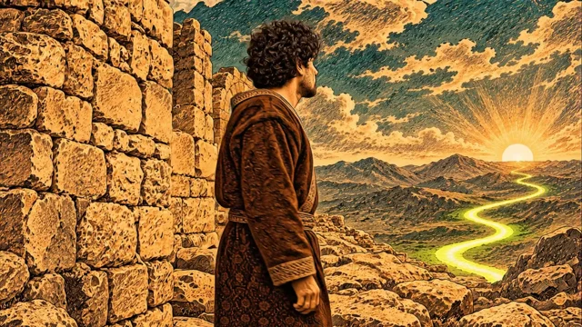

2-davom — video, 16:9 (yotiq), 8 s

Nima bo'ladi
«Ko'zgularga boqmay turib… Nafsini yenggan inson — eng buyuk g'olib» — u qoya ustida o'ngga, vodiyga qarab turibdi. Uning oldida, o'ng tomonda toshlar orasidan katta ko'zgu ko'tariladi; aksi — mag'rur, qizil neon chiziqli boy odam (zarbof to'n). U qo'lini ko'ksiga qo'yadi, ko'ksida yashil nur yonadi; qizil aks shishadek yorilib, qizil kulga aylanib uchib ketadi; ko'zguda xotirjam o'zi qoladi.
KameraJuda sekin push-in uning yuziga (yon tomondan)
Horizontal 16:9 video, 8 seconds, from the attached image (this image is the first frame). Very slow push-in from the side toward the man's face; he stays standing on the rocks in profile, facing right toward the valley, exactly as in the image. Slowly, on the right side in front of him, a tall old standing mirror in a carved stone frame rises up out of the rocks, its glass turned toward him, so we see his reflection at an angle. In the mirror his reflection is a proud, cold rich version of himself in a heavy gold-embroidered robe, its outline traced by a thin neon red glowing line, with a cold arrogant smirk. The real man looks straight into the mirror, calm and brave, and slowly places his hand flat on his chest; a soft neon green light starts to glow under his hand. The red reflection cracks like glass and crumbles into red ash that blows away to the right in the wind; now the mirror shows only his own calm face and the green light on his chest. He takes one deep breath and his shoulders relax. The mirror never shows any text and the man never walks away. Keep exactly the same look as the attached image for the whole clip: a detailed engraved ink etching on warm sepia-gold paper with fine cross-hatching, dramatic swirling sky, the glowing neon green path; it never turns into a photo, 3D render or a different style, and the camera never cuts to a new scene. There is never any ring or circle of light above or behind anyone's head. Keep every person exactly as in the image: the same face, curly or grey hair, beard, the same brown embroidered robe; faces never change into other people. Silent video: no audio, no voices, no music; nobody speaks. Negative: no text, no letters, no numbers, no subtitles, no captions, no logos, no brand names, no watermarks, no extra people, no extra hands, no ring above any head, no circle of light behind any head